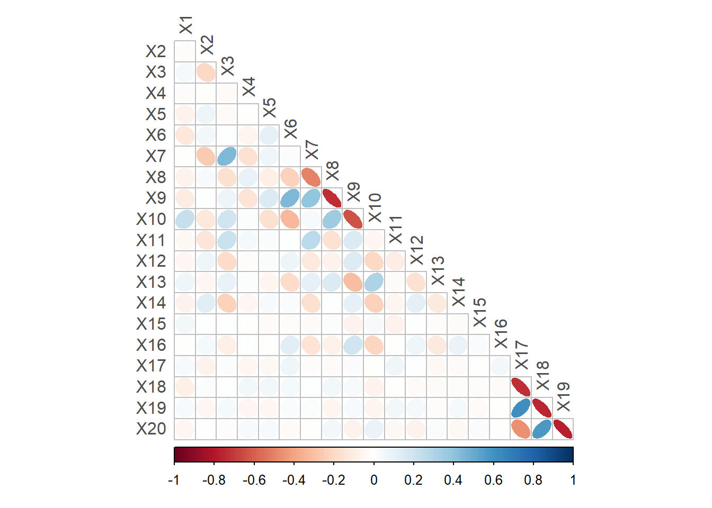

Chemical Sample Classification Report
Exploratory Data Analysis
Overall Size and Shape
train has 1225 rows, with an overall minimum value of -0.52 (X7) and an overall maximum value of 16.76 (X5).
Statistic | Minimum | Maximum |
|---|---|---|
Mean | 0.25 (X8) | 13.8 (X5) |
Variance | 0.04 (X10) | 1.57 (X4) |
Range | 1.42 (X18) | 8.37 (X14) |
Spread between variables in terms of mean, variance and range is significant.
Outliers
Values which are significantly different from other data points in the dataset were explored. It is essential to distinguish between genuine extreme values and errors (measurement, data entry, faulty readings). Genuine data contain valuable information; problematic outliers may need to be treated or removed as they can skew analysis.
Distribution plots suggest that variables are generally normally distributed (Figure 1) with some non-normality (Figure 2).
The violin plots (Figure 3) visualise potential outliers - data points beyond 1.5x the interquartile range (IQR) (50% of the data). These are the points on the whiskers; X8 has many more potential outliers than variable X9.
trainThe distribution and density plots in Figure 2 show potential non-normal distributions, with multiple peaks or skewness. The violin plots (Figure 3) help visualise potential outliers - data points beyond 1.5x the interquartile range (IQR), representing 50% of the data. These are the dots on the whiskers; X8 has many more potential outliers than variable X9.
trainPotential outliers were investigated statistically with varying results depending on method and sensitivity.
A general approach involves identifying data which is ± 3 standard deviations from a calculated statistic (z-score) - meaning it is beyond 0.3% of the centre.
There are a total of 81 ‘outliers’ in the dataset from 19 variables; ‘X8’ has the most with 10.
Decision
Data will be scaled to prevent variables having undue influence.
Outliers will be retained.
Correlation between Variables

After exploring overall statistics and outliers, this section examines linear relationships. The correlation matrix shows strong negative correlation between X18, X20 each with X17, X19 and strong positive correlation between X18 and X20 as well as between X17 and X19. A lot of variables have little or no correlation.
The ellipsoid shapes in the pair plot highlight liner relationships with correlation coefficients (-1 to 1) indicating the strength of the relationship.